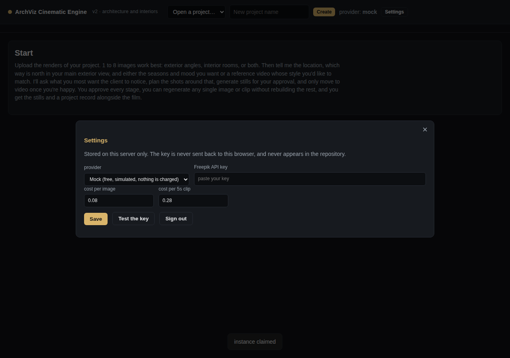

Open a tab and start. Nothing to install, no account, no server. A server only enters the picture if you want to drive a paid generation API, and that is a limit of browsers rather than of this tool.
The whole engine is the page: the planner, the image analysis, the fidelity audit, the clip measurements and the final render.
It is a static page on GitHub Pages. There is nothing to sign into and nothing to wait for.
One to eight images of one project. They are read in the tab and never uploaded anywhere.
The plan is deterministic, so the same intake always gives the same shot list and you can predict what a change will do.
Out of the box it uses a demo generator that costs nothing and still exercises every gate, so you can take a project all the way to a finished film before deciding whether to spend anything.
The film is recorded from a canvas, so its format is whatever the browser will encode. Chrome, Edge and Safari on a normal desktop write H.264 in an MP4, which is what a client can drop into a slide deck. Firefox and some builds of Chromium have no H.264 encoder and write VP9 in a WebM, which plays in any browser but not in QuickTime, PowerPoint or most editors.
The tool does not guess at this. It records a fraction of a second, reads the bytes back, and tells you in Settings and on the render page exactly what it produced. A file is never given an .mp4 name for something an MP4 cannot hold.
This is the one thing a static page genuinely cannot do for you.
A web page can only read a reply from another site when that site marks the reply readable, which is what the CORS rules are. An API that authenticates with a secret key normally refuses, precisely so a key cannot be used from a web page. That is a sensible rule and it is not something this tool can wave away.
So the tool does not pretend. Paste a key under Settings, press Test the key, and it says plainly whether calls from your browser get through. If they do, real generation works from the page. If they do not, nothing is charged and you have two honest options.
Same app, FastAPI and ffmpeg behind it. Use it for a paid key, for H.264 output, or for a shared address.
GitHub’s own container host runs it unchanged, with an HTTPS address and nothing installed locally.
For an address that is up without anyone opening anything, deploy the same repo to a container host. On Render, sign in with GitHub, choose New, then Blueprint, connect the repository and pick the branch.
| Free | Starter plus disk | |
|---|---|---|
| Cost | $0, no card | about $9.50 a month |
| Work survives a restart | No | Yes |
| Sleeps when idle | Yes | No |
| Safe with a paid key | No | Yes |
Railway works out around $5 a month on the Hobby plan. The repo ships a railway.json describing the build; the difference is that Railway does not create the disk for you, so after the first deploy add a Volume mounted at /data and set ARCHVIZ_DATA_DIR=/data.
On either host, 512 MB of RAM is tight for ffmpeg and OpenCV holding 1080p frames. If a render dies out of memory, raise the instance size rather than shortening the film.
git clone https://github.com/argaurshar/Images-to-video-with-ref-video
cd Images-to-video-with-ref-video
pip install -r requirements.txt
./run.sh # http://127.0.0.1:8000Or with Docker:
docker build -t archviz .
docker run -p 8000:8000 -v archviz-data:/data archvizRun a single worker. The batch job registry lives in the process, so a second worker would not see a running job and could start a duplicate batch and pay twice.
